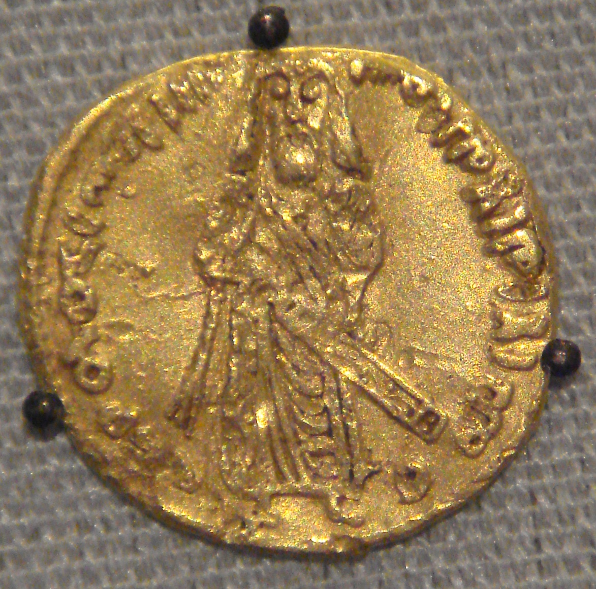

Qarzi hasana (qard hasan): Islomda foizsiz, savobli qarz qanday beriladi
Qarzi hasana — arab tilidagi «qard hasan», yaʼni «goʻzal qarz» — Islomda foizsiz, ehtiyoj egasiga beriladigan savobli qarz. Qarz oluvchi faqat olgan asosiy summani qaytaradi; hech qanday foiz yoki ustama olinmaydi, chunki bu riboga kiradi. Qurʼonda bu tushuncha bir necha oyatda tilga olinadi (masalan, Baqara surasi 2:245, Hadid 57:11, Tagʻobun 64:17). Qarzi hasana sadaqadan farq qiladi: sadaqa qaytarilmaydi, qarz esa qaytariladi. Maʼlumotnoma — faqat faktlar asosida.

Islom moliyasida foiz (riba) taqiqlangan boʻlsa-da, bir musulmon boshqasiga pul qarz berishi — nafaqat mumkin, balki savobli amal sanaladi. Buning klassik shakli — qarzi hasana. Quyida qarzi hasana nima ekani, qaysi manbalarga asoslanishi va sadaqadan qanday farq qilishi faqat faktlar asosida tushuntiriladi.
Qarzi hasana nima
Qarzi hasana — arabcha «qard hasan», yaʼni «goʻzal» yoki «savobli qarz». Bu — ehtiyoj egasiga foizsiz beriladigan qarz boʻlib, qarz oluvchi faqat olgan asosiy summani (principal) qaytaradi. Qarz beruvchi undan hech qanday foiz, ustama yoki foyda ulushi talab qilmaydi — aks holda bu riboga aylanadi va Islomda harom boʻladi. Shu bilan qarzi hasana foizli zamonaviy kreditdan tubdan farq qiladi: oddiy kreditda qarzdor asosiy summa ustiga foiz ham toʻlaydi.
Qurʼondagi asos
«Qard hasan» iborasi Qurʼonda bir necha bor keltiriladi. Baqara surasining 245-oyatida: «Kim Allohga goʻzal qarz bersa, (Alloh) uni koʻp barobar koʻpaytirib (qaytaradi)», deyiladi. Shunga oʻxshash maʼno Hadid surasi (57:11), Tagʻobun surasi (64:17) va Muzzammil surasi (73:20)da ham uchraydi. Bu oyatlarda muhtojga foizsiz qarz berish Allohga berilgan «goʻzal qarz»ga qiyos qilinadi va uning ajri koʻp barobar vaʼda etiladi.

Qarz — sadaqa emas
Qarzi hasana sadaqa yoki zakotdan farq qiladi. Sadaqa va zakot — qaytarilmaydigan xayriya; qarzi hasana esa qaytariladigan qarz. Yaʼni qarz oluvchi olgan summani belgilangan muddatda egasiga qaytarishi shart. Aynan shu jihati bilan qarzi hasana insonga oʻz oyoqqa turishiga yordam beradi va unda qarzdorlik masʼuliyatini saqlab qoladi.
Ustama yoʻq, lekin real xarajat qoplanishi mumkin
Qarzi hasanada qarz miqdoriga yoki muddatiga bogʻliq hech qanday ustama olinmaydi. Biroq koʻpchilik ulamolar qarzni rasmiylashtirish bilan bogʻliq real, aniq maʼmuriy xarajatni (masalan, hujjat yoki xizmat haqi) qoplash mumkin deb biladi — sharti: bu haq qarz summasiga nisbatan foiz tarzida hisoblanmasligi va yashirin riboga aylanmasligi kerak.
Garov va kafil joiz
Qarzi hasanada qarz beruvchi oʻz haqini kafolatlash uchun garov (rahn) yoki kafil soʻrashi mumkin — bu ribo emas, balki qarzning qaytishini taʼminlovchi vosita. Qarz hujjat bilan yozib qoʻyilishi ham tavsiya etiladi; Baqara surasining 282-oyati qarzni yozib, guvoh keltirib rasmiylashtirishga daʼvat qiladi.
Qarzdor qiynalsa — muhlat berish
Baqara surasining 280-oyatida qarzdor moddiy qiyinchilikda boʻlsa, unga yengillik — toʻlov muddatini kechiktirish tavsiya qilinadi: «Agar (qarzdor) qiyinchilikda boʻlsa, qoʻli kengaygunicha muhlat (bering)». Shu bois qarzi hasanada qarz beruvchidan sabr va yengillik koʻrsatish kutiladi, qiyin ahvoldagini qistab-siquv emas.
Amalda qayerda uchraydi
Qarzi hasana amalda turli shaklda uchraydi: oila va mahalla ichidagi oʻzaro yordam, masjid yoki jamoa huzuridagi yordam jamgʻarmalari, hamda baʼzi Islom banklari cheklangan miqyosda taklif qiladigan foizsiz qarz mahsulotlari. Baʼzi davlatlarda qarzi hasana jamgʻarmalari va kooperativlari tuzilib, talabalar, kichik tadbirkorlar yoki favqulodda ehtiyoj egalariga foizsiz qarz beradi.
Nega bu Oʻzbekiston va diasporaga muhim
Qarz va qarzdorlik — koʻp oila uchun hayotiy masala, foizli kredit esa riba nuqtai nazaridan savol tugʻdiradi. Qarzi hasana tushunchasini bilish diniy jihatdan toʻgʻri va oʻzaro yordamga asoslangan muqobilni koʻrsatadi. Bu maʼlumotnoma umumiy diniy-huquqiy asoslarni tushuntiradi; aniq masalada malakali olim yoki ishonchli diniy idoraga murojaat qilish tavsiya etiladi.

Manbalar
- Qur'an — Surah al-Baqara 2:245, 2:280, 2:282; al-Hadid 57:11; al-Taghabun 64:17; al-Muzzammil 73:20 (qard hasan references)
- Qard al-Hasan — overview (interest-free benevolent loan, principal-only repayment)
- Islamic Financial Services Board / AAOIFI — qard (interest-free loan) in Islamic finance standards
- Qard Hasan Financing in Islamic Banks — academic review (definition, practice)